儿童的三庭五眼、头身与身高：直接观察记录
2026-10-27 · 用户指定“小孩”搜索页 · 仅调研，不生成图片，不修改skill
实际查看50张封面，来自50条不同笔记；另逐张查看3个帖子的10张详情大图。挑选12组案例作结构、姿态或证据限制的重点观察。多帖可能出现同一人物，封面还包含拼图、AI示例、插画、文字和成年人，不能说成50位已核验的真实儿童。
用户指定搜索页 · 50条来源CSV · 来源与分类JSON · 12组逐例观察JSON
观察方法：先看结构，不套成人等分脸或同一双大眼睛
- 三庭：沿脸部方向观察发际线—眉间/眉线—鼻底—颏部，不用发型顶部代替发际线。记录哪段相对长短，不强迫三等分；刘海、帽子挡住则不填。头倾斜和俯仰明显时不报告精确百分比。
- 五眼：将眼裂宽度、内眦间距、外眼角至两侧脸缘的留白分别看；还要看虹膜露出、上下睑覆盖和眼尾收合。不能把脸宽机械分成五个相等眼宽，也不能只用“圆眼、宽眼距”描述所有孩子。
- 头身与四肢：先确认头顶、颏部、鞋底可见，再区分照片二维轮廓和身体尺寸。肩线、上臂前臂、膝位、小腿、脚部与重心分别观察；宽松衣料、长衣摆和阔腿裤遮挡的位置不补猜。
- 身长/身高：社交照片提供生活外观，厘米值另据作者明确标注或官方尺度表。标准表中未满2岁使用身长，2岁起使用身高，不能混为站立测量值。
- 年龄与真实性：作者月龄/年龄与视觉年龄分开；AI示例、插画、成人昵称、表情包搬运和未核验处理方式分别标记。数据量不等于真实独立儿童数量。
- 提示词落地：先选年龄和相容身体比例，再设计独立脸型及两三处眉眼、鼻唇、颊颌关系。皮肤细节只做年龄相容的轻量补充，婴幼儿不套成人粗大毛孔、痘印和皱纹。新角色不复制研究照片中的整个人。
角色尺度的独立参考
下表为国家卫健委WS/T 423—2022表A.3、A.4的P50（中位数），单位厘米，供角色与场景尺度设定参考。它不代表照片中某个孩子的实测值，也不是每个孩子必须符合的单一身高。2岁以下为卧位身长；2岁起为站立身高。
| 整月/整岁 | 男童P50（cm） | 女童P50（cm） | 口径 |
|---|
| 出生 | 51.2 | 50.3 | 身长 |
| 6个月 | 68.7 | 67.1 | 身长 |
| 1岁 | 76.7 | 75.2 | 身长 |
| 2岁 | 88.2 | 87.0 | 身高 |
| 3岁 | 97.5 | 96.2 | 身高 |
| 4岁 | 104.9 | 103.7 | 身高 |
| 5岁 | 112.0 | 110.8 | 身高 |
| 6岁 | 118.8 | 117.5 | 身高 |
国家卫健委原文 · 本地原始PDF · 已逐页查看PDF第9—11页对应表格。7岁以下表未外推至标题自述8岁的样本。照片中未建立可靠厘米数证据者，均保持未知。
二维外轮廓观测示例
两图均由手工近似标出发型顶部、颏部和鞋底，只示意照片中的头部与身体份量。含头发、鞋、机位、站姿和标点误差，不输出解剖头身比，不当成年龄标准或真实厘米测量。原坐标另存JSON，未对人脸或身体进行变形。
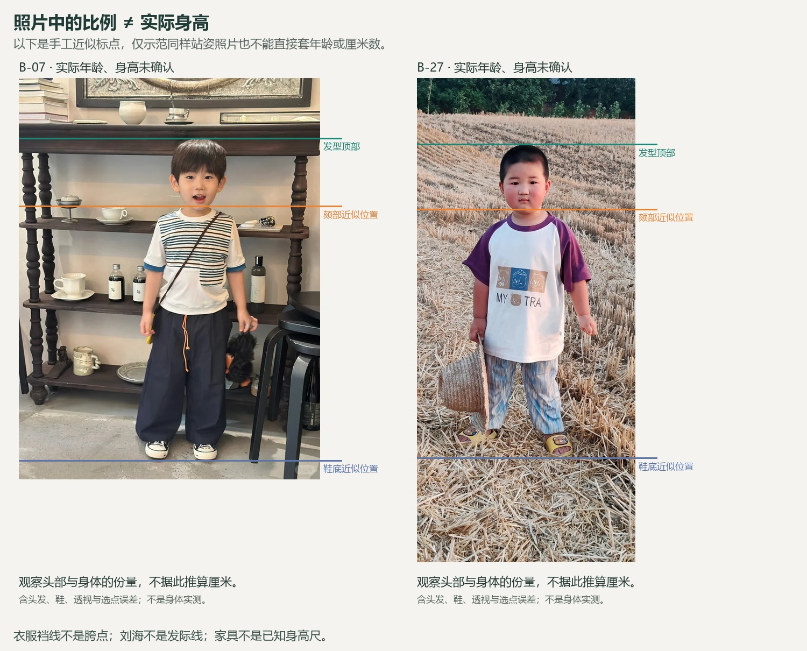
原始手工观察位置
12组重点观察
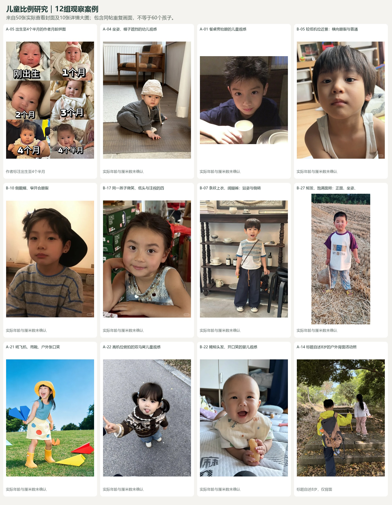
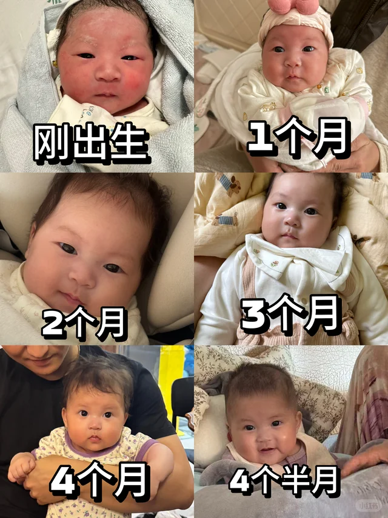
A-05 · 出生至4个半月的作者月龄拼图
逐渐消失的婴儿感，记录宝宝每个月的变化年龄依据：封面标注出生、1/2/3/4月、4个半月；正文确认记录至4个半月。
纵向三庭观察：同一拼图中的额部、面颊与口鼻区的观感随照片而不同；出生图眼裂较窄，后几张更睁开，不能把眼睛开合全解释为个体眼型或永久生长变化。
横向五眼/眼睑关系：能看见不同照片中的鼻翼、眼距、面颊体量关系；各格分辨率、角度与头部转向不同，不计算五眼或增长百分比。
身体与身高证据：多为包裹、抱坐或胸上画面，头脚不全；不计算头身比或身长。
提示词可用方法：婴儿角色不能只是缩小的成年脸，也不能统一巨大黑眼珠；先设计额部、面颊、下颌及口鼻区，再写柔软肤质。
限制：每格月龄仅据作者文字，不把一张拼图计成六名婴儿；月龄不等于相同机位的纵向测量。
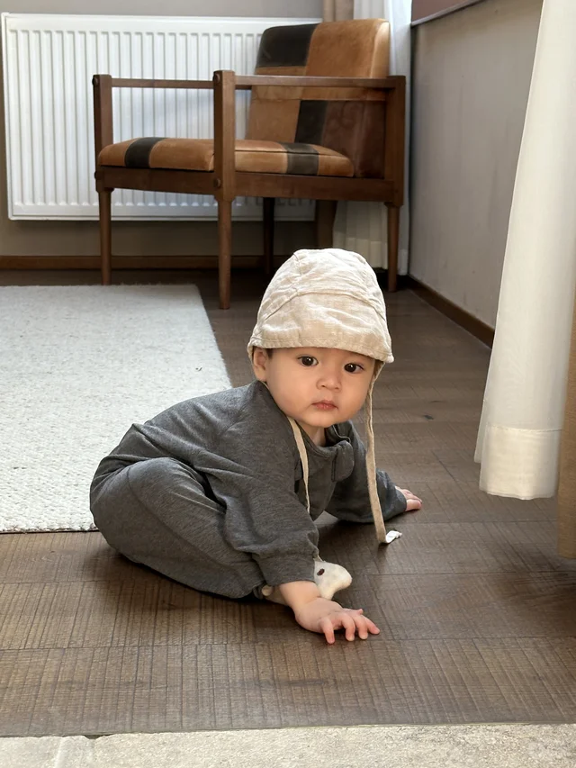
A-04 · 坐姿、帽子遮挡的幼儿观感
谁能拒绝这么可爱的小孩～年龄依据：未确认实际年龄。
纵向三庭观察：帽子遮住发际线，上庭不可量；圆润面颊与较小的口部同在，不能补猜帽檐下的额高。
横向五眼/眼睑关系：眼裂有上睑遮盖，鼻翼和嘴部并非与眼睛同比缩放；只描述可见关系，不作头部旋转校正后的定量。
身体与身高证据：身体坐拢、腿屈曲，手撑地；大外套增加衣服轮廓，不用于实际腿长或站立身高。
提示词可用方法：写清坐姿和支撑点；不要把坐姿的紧凑轮廓移植为站姿短腿。
限制：帽子、坐姿、宽松衣服同时限制比例判断。
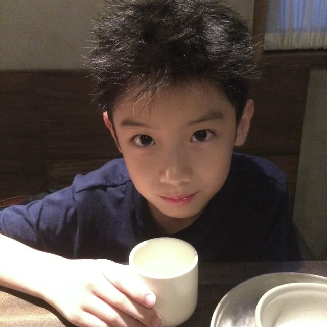
A-01 · 餐桌旁抬眼的儿童观感
tutu途（无标题）年龄依据：未确认实际年龄。
纵向三庭观察：浓密向上的头发不是发际线；头部略俯、眼睛抬看镜头，额部和鼻唇区的投影受机位影响。
横向五眼/眼睑关系：上睑与眼裂不是统一圆弧；较平的眉形、眼头眼尾的收合及鼻唇关系共同形成这张脸。
身体与身高证据：桌沿遮挡下半身，近镜头的手会显大；没有身高或全身比例证据。
提示词可用方法：把抬眼、头部角度和眉眼张力写成连贯动作，不把这个注视状态固定成所有儿童的眼型。
限制：近景俯拍；头发高、手近镜头，均会改变视觉比例。
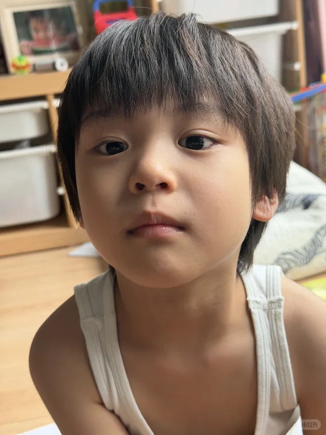
B-05 · 较低机位近景：横向眼裂与普通鼻唇
这么可爱怎么办！！！！年龄依据：未确认实际年龄。
纵向三庭观察：刘海遮发际线，上庭留空；稍抬头使鼻底、颏部更显眼，不能直接据此说中下庭天生偏长。
横向五眼/眼睑关系：眼裂偏横向，虹膜受到上下睑包裹；普通宽度的鼻头、较平静的唇形，与面颊体量形成整体。
身体与身高证据：只有肩胸与一段手臂，不能量腿、肩臀比或身高。
提示词可用方法：提供“大眼娃娃模板”之外的一类眉眼关系；新角色仍须另定整脸结构，不复制本人。
限制：低机位和近距离影响鼻头、下颌观感。
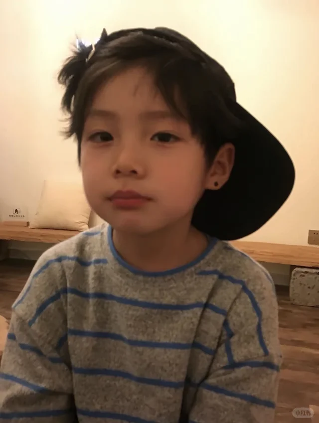
B-10 · 侧戴帽、窄开合眼裂
如果忧郁是一种天赋年龄依据：未确认实际年龄。
纵向三庭观察：帽子与头发限制发际线判断；口鼻区有自然体量，颏部不是统一尖小。
横向五眼/眼睑关系：眼裂纵向开合较窄，上睑覆盖更明显；这种组合不同于B17较开的眼裂，但亮度、表情也参与差异。
身体与身高证据：胸上近景，不能由脸形估计全身。
提示词可用方法：儿童的辨识点可以来自上睑覆盖与鼻唇组合，不必每个孩子都生成外露的大虹膜。
限制：本例仅看封面，未核对详细年龄、镜头或处理方式。
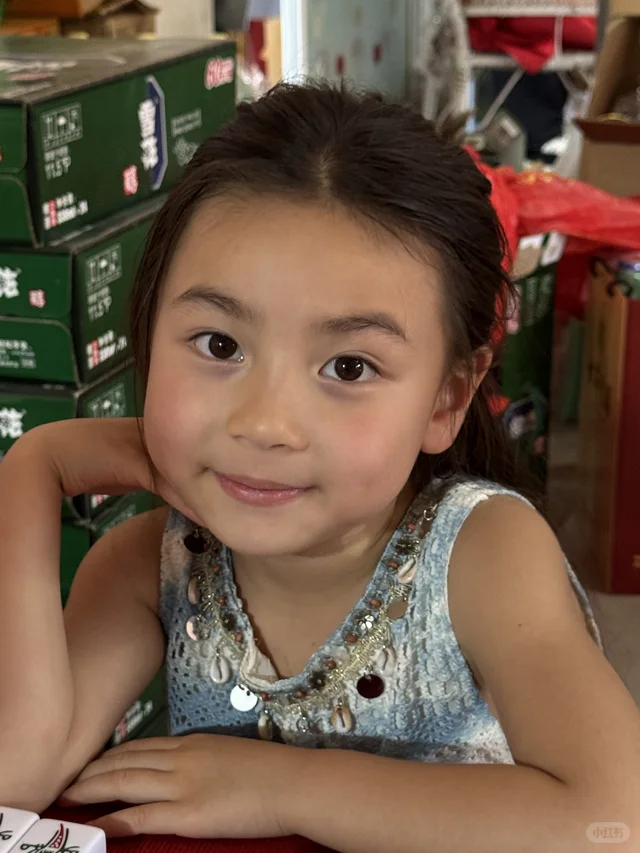
B-17 · 同一孩子微笑、低头与注视的四张近景
原相机小孩年龄依据：未确认实际年龄；原相机是作者自述。
纵向三庭观察：束发后发际线较清楚，额部有较大可见面积；眉间至鼻底、鼻底至颏部各有自己的长度。头部有倾斜和俯仰，不输出精确三庭百分比。
横向五眼/眼睑关系：眼裂较开，内眼角之间仍留有空间；上睑覆盖虹膜上缘、眼尾收合，两眼随倾斜与微笑略有差别。低头时眼裂看起来变窄，不能当作换了眼型。
身体与身高证据：手臂放在桌面，手托颊或低头；仅能记录肩臂、颈部和姿态，不能量全身身高。
提示词可用方法：先设计额部—眉眼—面颊—鼻唇的相容组合；注视和笑容要同时牵动眼睑、面颊、嘴角。
限制：4张是同一帖的近景，不能计成4个孩子；“原相机”不能证实无修图。
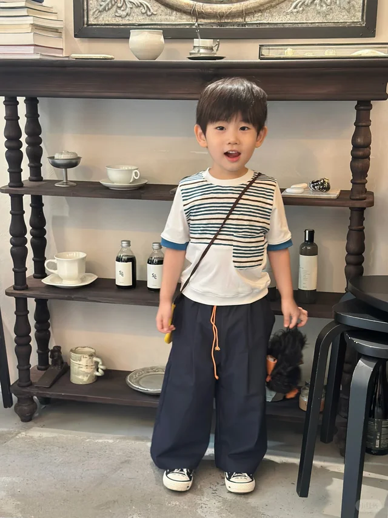
B-07 · 条纹上衣、阔腿裤：站姿与侧转对照
谁家小孩这么会穿啊？！年龄依据：正文只有幼儿园穿搭等标签，没有具体年龄或厘米数。
纵向三庭观察：刘海遮发际线，三庭不可完整测量；近景可见上睑覆盖与圆润鼻唇区。
横向五眼/眼睑关系：眼裂不是统一放大的圆形，侧转与说话时开合改变；不从远景封面量眼角细节。
身体与身高证据：封面头脚完整，肩线自然，阔腿裤遮盖真实膝位与胯部。另3张大图可看站姿、拿玩具侧转和戴帽侧面；其中正面大图有鞋尖裁切，不能当完整身高测量图。
提示词可用方法：窄肩、头部相对身体的份量、松裤腿和自然手臂下垂分别设计；衣服裆线不是解剖胯点。
限制：仅可作照片二维外轮廓示意，不能把桌子、凳子当已知尺寸。
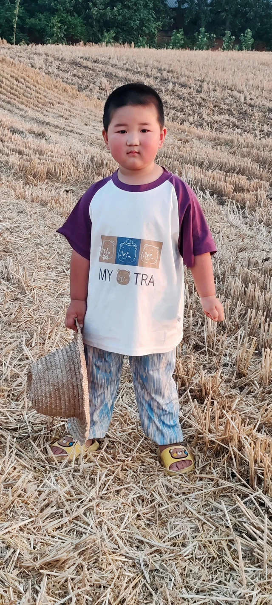
B-27 · 短发、饱满面颊：正面、坐姿、进食与行走
这小孩太酷了吧～年龄依据：正文无具体年龄和身高；“胖小孩”仅为作者用词。
纵向三庭观察：短发使发际线较可辨；额部、鼻唇区和颏部形成与B17不同的组合，不能自动统一成高额头、极短下庭。
横向五眼/眼睑关系：横向较窄的眼裂、较平的上睑与饱满面颊共同存在；不能为了所谓可爱把眼睛放成同一圆眼模板。
身体与身高证据：正面可见较饱满的身体轮廓；上衣偏长，遮住腰胯。坐姿会压缩躯干并改变腿长观感，行走图也有屈膝和前后透视。
提示词可用方法：脸颊、眼睑、肩臂和躯干的体量需相容；保留体态差异，不根据作者形容作体重或健康判断。
限制：同一帖多图不新增人数；正面封面与细节大图有不同场景、衣服和清晰度。
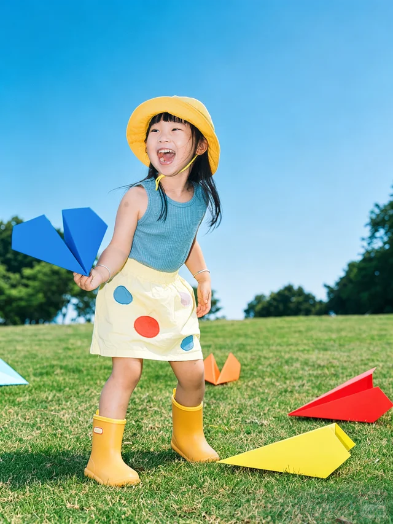
A-21 · 纸飞机、雨靴、户外张口笑
纸飞机女孩儿，童年是五颜六色年龄依据：未确认实际年龄。
纵向三庭观察：帽子挡住上庭，大笑改变下庭和口部外形；不把张嘴长度当作下巴结构。
横向五眼/眼睑关系：笑时眼裂收窄、面颊抬起；眼睛较小的瞬间可能来自表情，不是固定眼型。
身体与身高证据：头脚较完整，可见手臂、膝与雨靴；帽顶和靴底都增加外轮廓高度，不用于真实头身或厘米数。
提示词可用方法：童年活力可以通过动作、重心和表情呈现，不需要统一大眼、磨皮和成人模特站姿。
限制：道具、服饰与大笑使解剖比例判断受限。
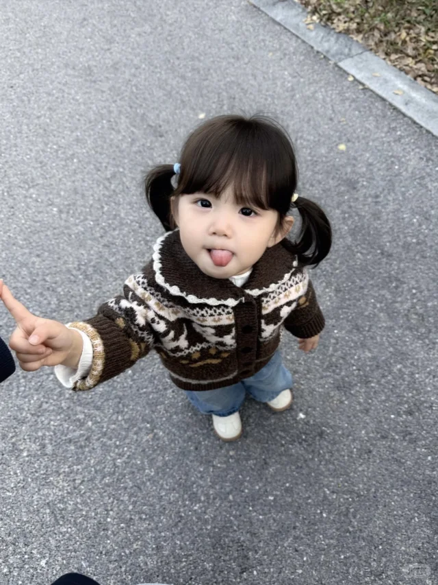
A-22 · 高机位俯拍的双马尾儿童观感
据说这是20后年龄依据：标题“20后”不是精确年龄。
纵向三庭观察：刘海、仰头和俯拍混在一起，不能量上庭或中庭真实长度。
横向五眼/眼睑关系：眼睛朝上看，眼睑与面颊受仰视表情影响；不当作标准中性正脸。
身体与身高证据：头离相机近，脚离相机远，画面中头部大、身体短；这种几何效果不能设成角色真实头身比例。
提示词可用方法：同一孩子在高机位和儿童眼平机位可能完全不同；构图选择应与比例目的匹配。
限制：此例用作透视反例，不计算头身比。
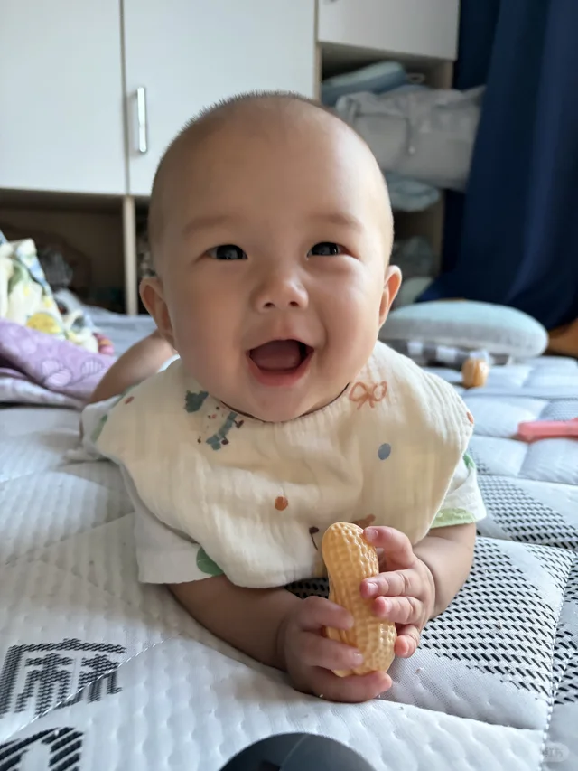
B-22 · 稀短头发、开口笑的婴儿观感
被这小孩甜到了～！年龄依据：未确认月龄。
纵向三庭观察：额部和上部头颅有明显份量，面颊柔软；大张嘴改变鼻底至下巴的外观。
横向五眼/眼睑关系：笑时眼睛偏横向收窄，仍有个体眉眼；与搬运表情包中的夸大黑眼视觉分开记录。
身体与身高证据：坐姿、成人支撑与被遮挡下半身，不用于身长/身高测量。
提示词可用方法：婴儿的开心可以是眼裂收窄与嘴部张开，而不是一律睁圆眼。
限制：仅凭笑容和坐姿不能确定月龄或发育状态。
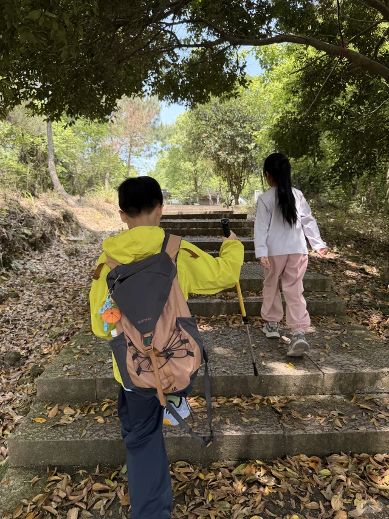
A-14 · 标题自述8岁的户外背面活动照
8岁男孩，五一去人少的地方年龄依据：标题标注8岁男孩；未独立核验。
纵向三庭观察：没有正脸，不分析三庭。
横向五眼/眼睑关系：没有正脸，不分析五眼或眼型。
身体与身高证据：背包、外套和上台阶动作遮住肩背与腿部轮廓；可看人与环境的相对尺度，不能用前方人物身高反推厘米。
提示词可用方法：年龄明确不代表照片就适合所有比例研究；记录证据缺口比补猜五官更有用。
限制：本例只提供年龄自述和活动情境，不提供可量的脸部或真实身高。
实际看过的10张详情大图
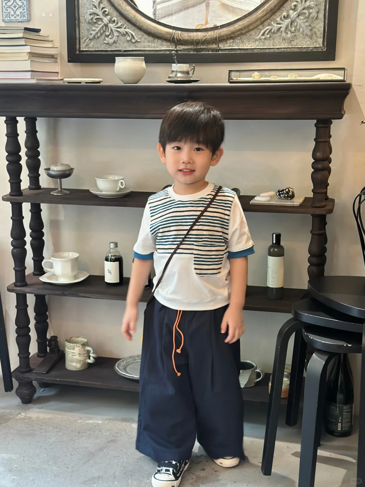
6a44cfdc0000000007025468 · 1080×1440 · 已逐张查看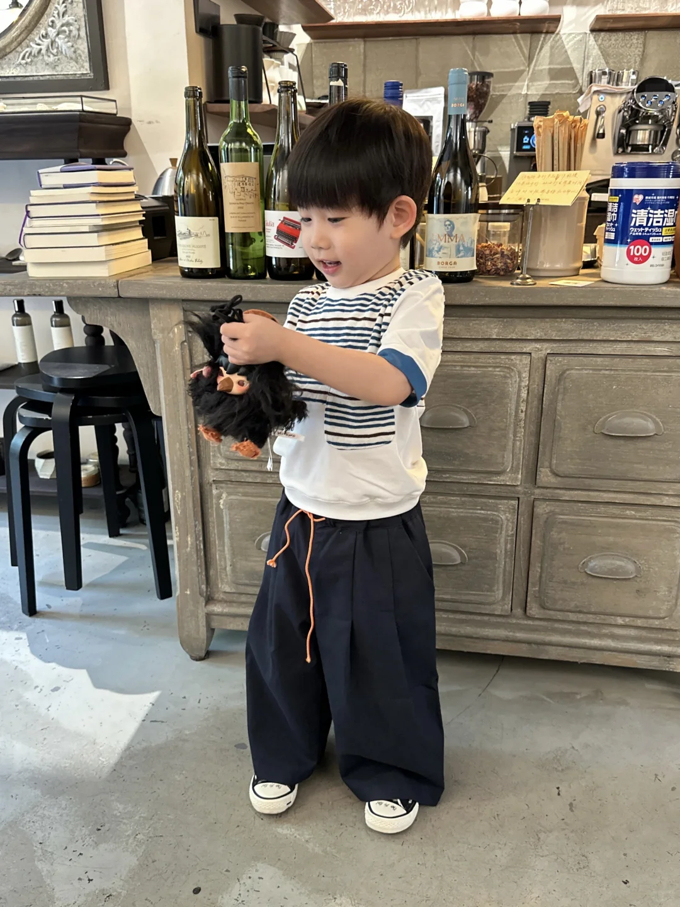
6a44cfdc0000000007025468 · 1080×1440 · 已逐张查看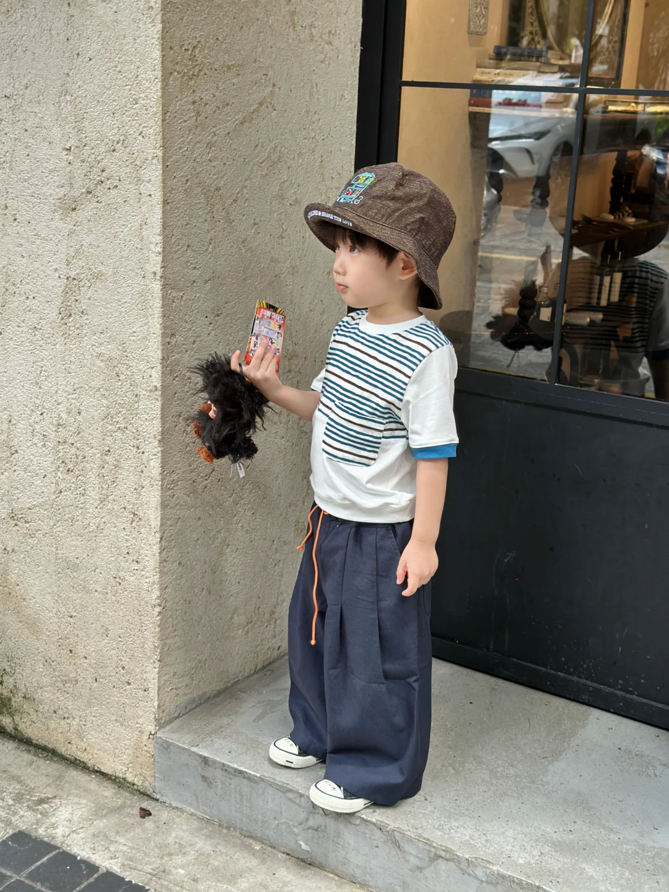
6a44cfdc0000000007025468 · 1080×1440 · 已逐张查看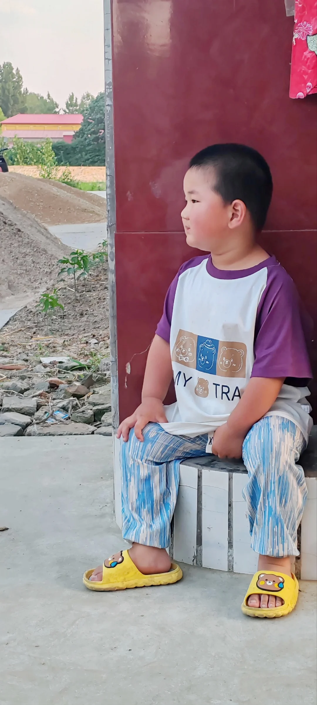
6a39e394000000001101548e · 1080×2395 · 已逐张查看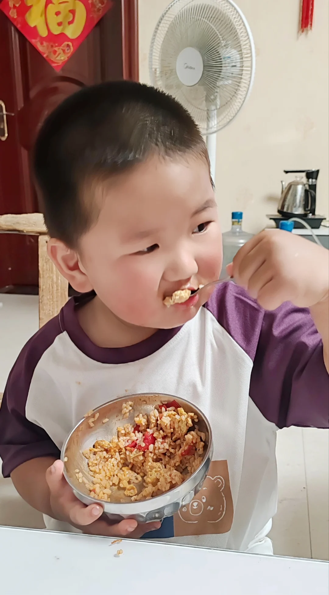
6a39e394000000001101548e · 1080×1950 · 已逐张查看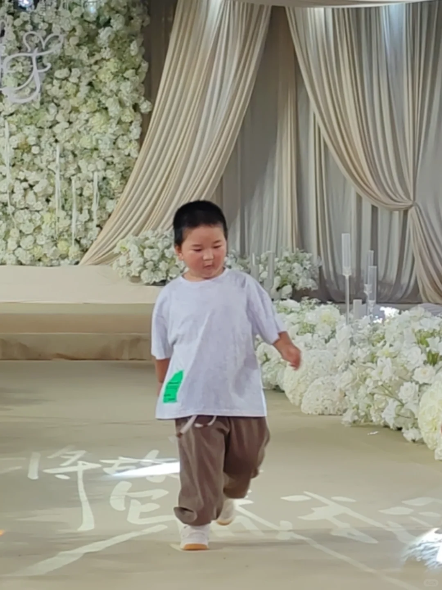
6a39e394000000001101548e · 1080×1440 · 已逐张查看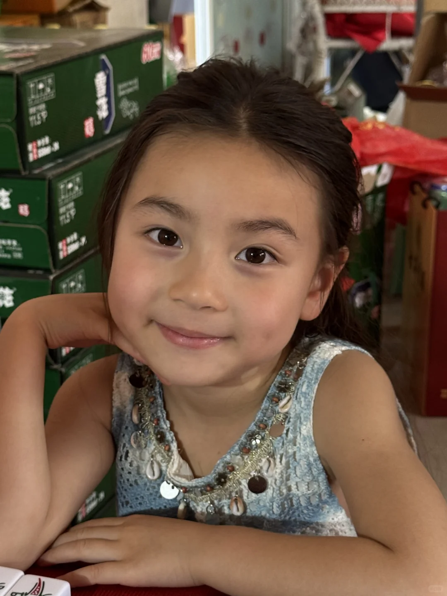
69f9c31e000000002301e46d · 1080×1440 · 已逐张查看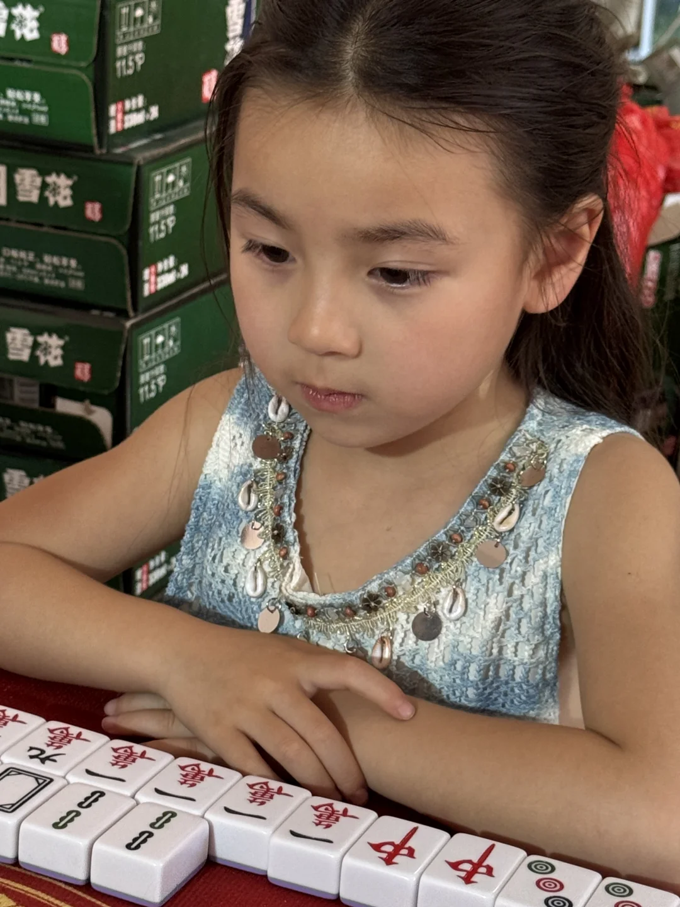
69f9c31e000000002301e46d · 1080×1440 · 已逐张查看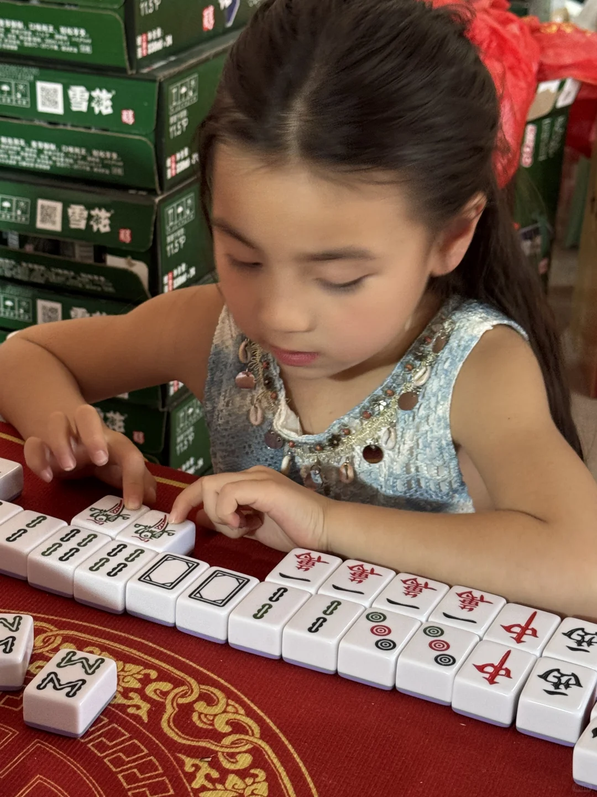
69f9c31e000000002301e46d · 1080×1440 · 已逐张查看69f9c31e000000002301e46d · 1080×1440 · 已逐张查看本轮范围
- 50为笔记与封面条目数，不是独立儿童数量；表情包近似/重复人物不另推断身份。
- 重点案例中明确年龄依据为一个出生至4个半月记录帖，以及一个标题自述8岁的背面活动帖；其余未确定实际年龄。
- 核对了4篇有效正文；另1篇详情跳回首页，没有当作已读正文。
- 搜索页含2025旧帖，也有仅月日内容，未把全部照片称为2026新样本。
- 标题原相机、摄影感、真人感不能证明照片未处理。来源不明、AI明示、插画和搬运等已分别标注。
- 本轮不建立年龄—三庭—头身的数值回归，也不由照片评估儿童健康、生育情况或体重。
- 只保存本轮工作区研究资料，未写入skill或长期记忆；独立后台标签页已关闭，用户原标签页保留。